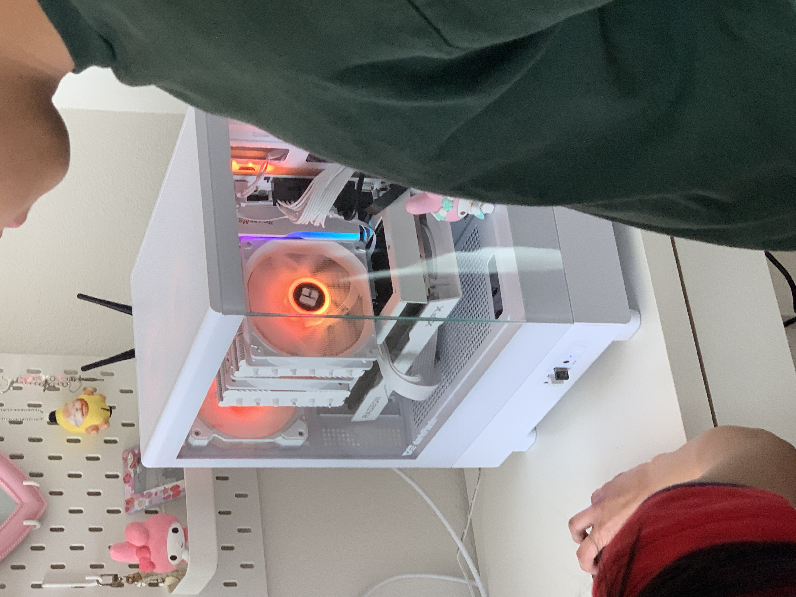
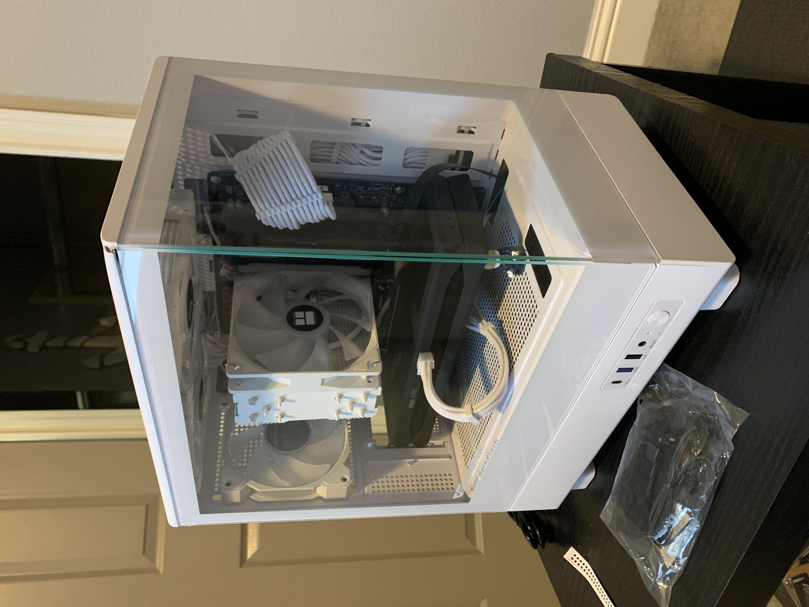

Client's PC Build
This was a custom build for a client who wanted an all white aesthetic build. Luckily, this build was in August of 2025 before the RAM and SSD shortage, so this build has 32GB of G.SKILL Ripjaws RGB DDR5, an Intel Core i5 14400F, a Samsung 990 1tb PCIE 4.0 SSD, an AMD RX 9060XT 8GB, an ASRock B760M Pro RS motherboard, a Thermalright Peerless Assassin 120, a Thermaltake Toughpower GF A3 Snow, and a darkFlash DB330M case.

Little cousin's PC
This custom build was for my little cousin who wanted to have his first PC, and requested to have a build similar to the build above. Due to the lower budget, I went for a mix of new and used parts, and bought all the parts the 1st week of RAMageddon. This PC has a Ryzen 5 3600, 16GB of 3200mhz Corsair Vengeance RGB Pro DDR4, an Intel Arc B580 Limited Edition, a Western Digital SN810 1TB SSD, a darkFlash PMT650 power supply, a darkFlash DB330M case, and a Thermalright Assassin King 120 CPU Cooler.

Personal PC
This is my personal PC that I've built and upgraded over 3 years. It currently has a Ryzen 5 4600G, an EVGA GTX 1660, a MSI B550M Pro-VDH motherboard, an EVGA 650BQ Power supply, 16gb of 3200mhz Geil Evo Potenza DDR4, a Teamgroup MP33 512gb NVME SSD, a Samsung 850 Pro Sata SSD, a 512gb Sata SSHD, a CoolerMaster TD500 Mesh case, and some cable extensions.
Second PC
This is my second PC built with my old parts, I let my little brother use this PC. It has an Intel Core i5 8400, a GTX 1060, a 256 SATA M.2 SSD, a 2tb Western Digital Green HDD, 16gb of Silicon Power DDR4 Ram, a Gigabyte B360M DS3H, a Coolermaster Hyper212 CPU cooler, a Thermaltake H17 Versa case, and a Thermaltake Smart 500 watt power supply.